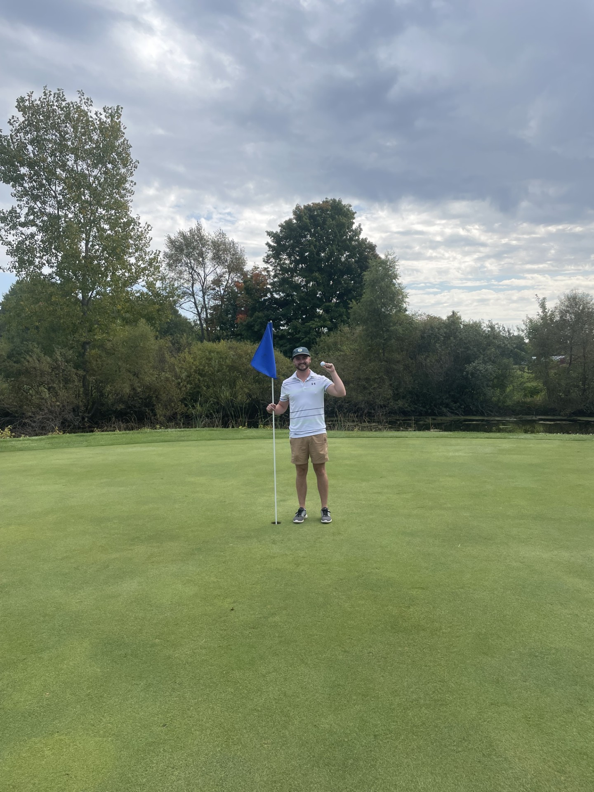
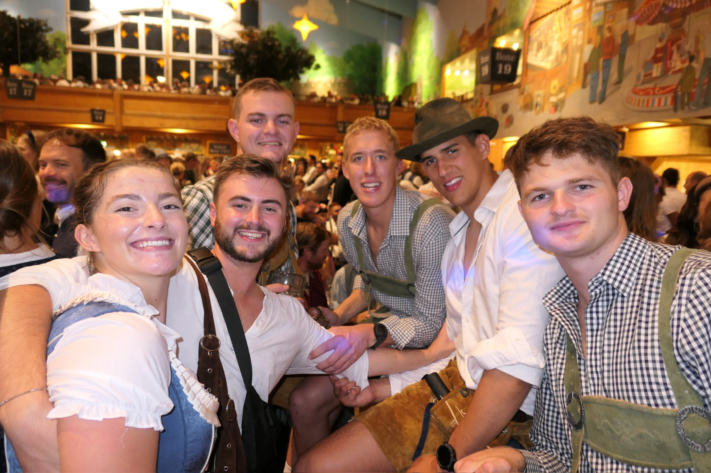

My Most Recent Hole-In-One

On September 20th, I made my second ever Hole-In-One at Wheatfield Valley Golf Club in Ingham County, Michigan. I was playing in a golf outing for the company I work for, and we arrived onto the second hole of the day. It was about 143 yards, I pulled out my 9-iron and hit one of the best shots of my life. The ball took one bounce about 10 feet away and just sunk into the hole. My coworkers were in disbelief, and I was in shock myself, but I knew it went in. However, my boss was convinced that it bounced past the hole, so we had to go and see for ourselves. We drive up next to the green, one of my coworkers is filming me from behind as I am running up to the hole, I look down and I see my ball was indeed in the hole! We all started jumping up and down, celebrating and yelling to the groups around us. It was truly a special moment, and at 20 years old, I am proud to say that I have my second hole-in-one, now it is time to chase that feeling again.
Traveling to Oktoberfest

Recently I took a trip to Munich, Germany to attend the annual Oktoberfest celebration. Myself and five other friends flew out of Toronto, Canada straight to Munich which took about 8.5 hours. As soon as we landed in Germany, we headed to the hotel and put on our lederhosen. From there, we took a train to the festival. It was one of the coolest experiences I have ever been part of. There were thousands of people gathered in one place, eating and drinking and having a great time. There were 15 huge beer tents with hundreds of people packed into each one, with each tent feeling like one big family. Everyone was drinking, dancing, and singing without a worry in the world. We went back to the festival on our second day around noon where we had a reserved table waiting for us. We were served big platters of charcuterie and each a plate with a full chicken on it, not to mention a plethora of steins. On our last day, we explored old Germany and downtown Munich. It was an eye-opening experience to see another country and how they live. I had never really been out of the country before, and to see how clean the city was and surprisingly how quiet it was, was really different but cool. Although it was a short trip, I would definitely do it again with more time and the knowledge of the festival I have now.